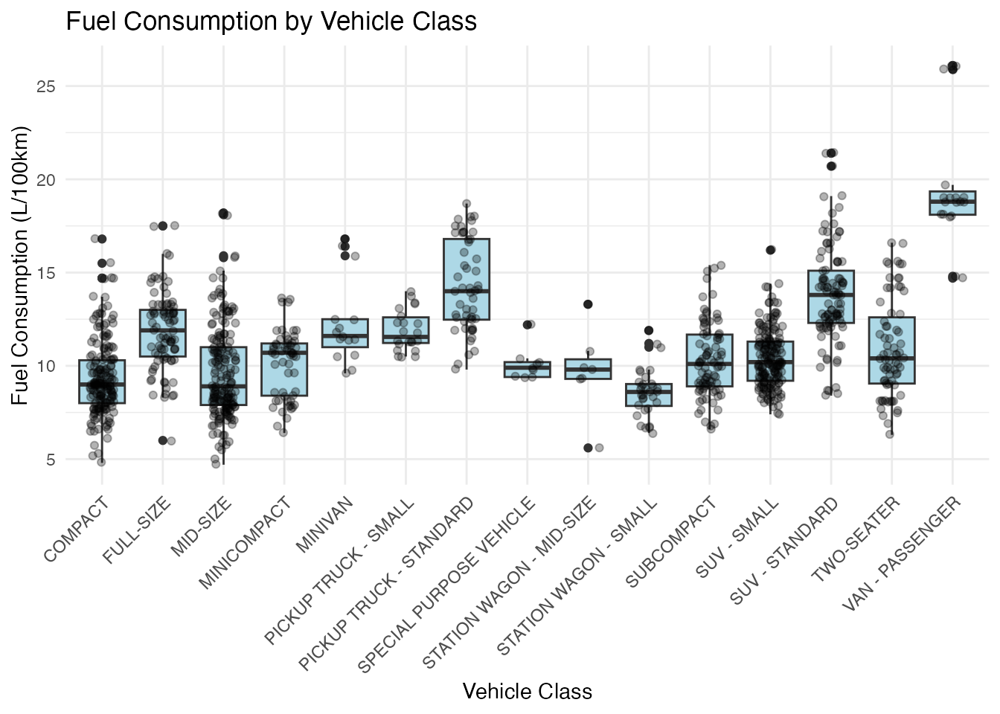
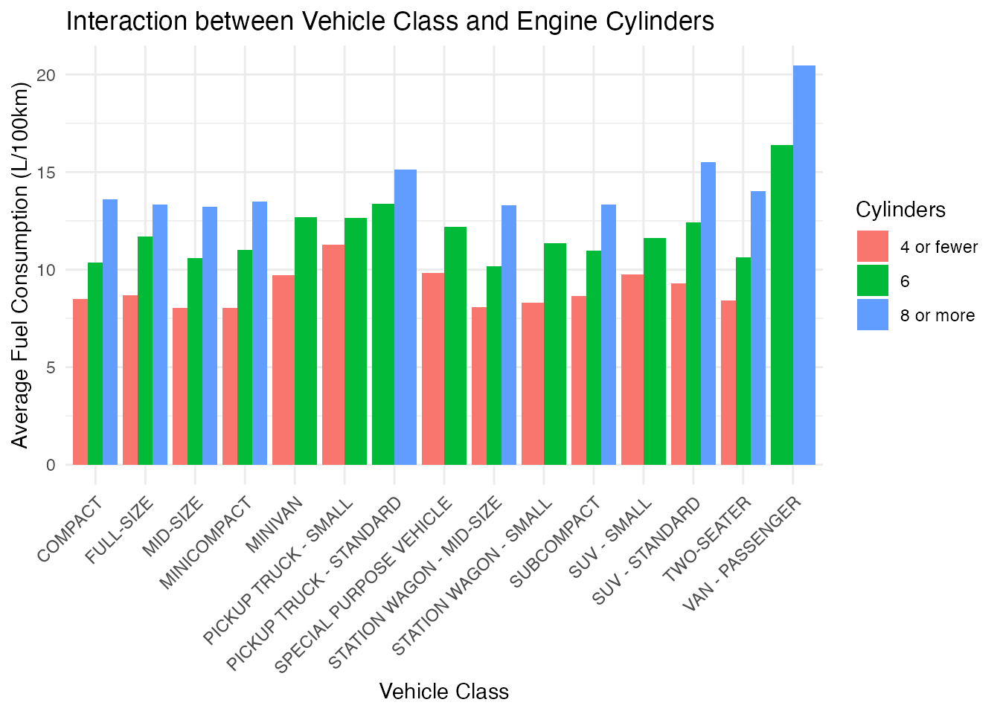
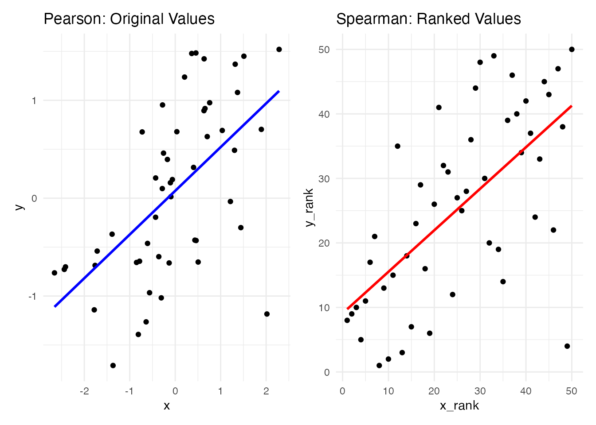
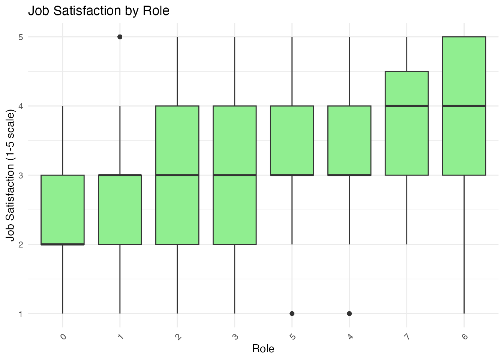

| Test | Linear Model Formula | What’s being tested |
|---|---|---|
| Correlation | y ~ x | Slope coefficient |
| One-sample t-test | y ~ 1 | Intercept |
| Independent t-test | y ~ group | Group coefficient |
| Paired t-test | diff ~ 1 | Intercept of differences |
| One-way ANOVA | y ~ group | Group coefficients |
| Two-way ANOVA | y ~ factorA * factorB | Main effects & interaction |
| Multiple regression | y ~ x1 + x2 + … | Multiple coefficients |
ANOVA and Extended Applications of Linear Models
Extending the General Linear Model Framework
Having established the basic GLM framework and seen how t-tests and multiple regression are special cases, we’ll now explore:
- Analysis of Variance (ANOVA) as an extension of the linear model
- Correlation techniques expressed as linear models
- Non-parametric tests as transformations of parametric tests
- Practical code implementations showing the equivalences
These applications further demonstrate the power of the unified statistical framework.
Now that we’ve established how the General Linear Model provides a unified framework for basic statistical tests like t-tests and simple regression, we’ll extend our exploration to more complex applications.
In this section, we’ll see how ANOVA, which is traditionally taught as a separate technique, is actually just another manifestation of the linear model. We’ll also explore correlation methods, non-parametric alternatives, and practical code implementations.
By continuing to build on the GLM framework, we reinforce the idea that these seemingly different statistical procedures are variations on the same underlying theme. This approach not only simplifies learning but also enables more flexible and sophisticated statistical modeling.
Unifying Statistical Tests: Summary Table
Key insights from this table:
- Each common test has a corresponding linear model formulation
- Many tests share the same model structure but test different coefficients
- Understanding the pattern makes it easier to apply the right test for your research question
This table summarizes how different common tests map to linear model formulations. For each test, we can identify what linear model would be equivalent and which coefficient(s) we’re testing.
Notice that the difference between tests often comes down to:
- What variables we include in the model
- Which coefficient(s) we’re interested in testing
- How we interpret the results
This unified framework helps students see that they’re not learning completely different procedures for each test, but rather applying the same underlying model in different contexts.
The table serves as a reference guide that students can use when deciding which statistical approach to use for their research questions. It emphasizes that the choice of test is about identifying the appropriate model structure for the research question, rather than selecting from an unrelated menu of statistical options.
ANOVA: Comparing Multiple Groups
ANOVA (Analysis of Variance) is traditionally taught as a distinct statistical test for comparing means across multiple groups.
- Null hypothesis: All group means are equal (\mu_1 = \mu_2 = ... = \mu_k)
- Alternative hypothesis: At least one group mean differs from the others
- Test statistic: F-ratio (ratio of between-group to within-group variance)
ANOVA is traditionally taught as a distinct test from regression, with its own set of formulas and concepts like “sums of squares” and “F-ratios.” However, ANOVA is actually just another manifestation of the general linear model.
The key insight is that when we compare means across groups, we’re essentially predicting an outcome (y) based on group membership (a categorical variable). This can be seamlessly represented within the linear model framework.
Fuel Consumption Dataset
Let’s use a real dataset on fuel consumption in Canada to demonstrate ANOVA as a linear model.
Code
# View the structure of the fuel consumption dataset
fuel_data |>
select(make, model, class, enginesize, cylinders468, fueluseboth) |>
head(5) |>
kable()| make | model | class | enginesize | cylinders468 | fueluseboth |
|---|---|---|---|---|---|
| ACURA | ILX | COMPACT | 2.0 | 4 | 8.3 |
| ACURA | ILX | COMPACT | 2.4 | 4 | 9.3 |
| ACURA | ILX HYBRID | COMPACT | 1.5 | 4 | 6.1 |
| ACURA | MDX SH-AWD | SUV - SMALL | 3.5 | 6 | 11.1 |
| ACURA | RDX AWD | SUV - SMALL | 3.5 | 6 | 10.6 |
This dataset contains information about vehicles sold in Canada, including their fuel consumption (measured in liters per 100 kilometers), engine characteristics, and vehicle class.
We’ll use this data to compare average fuel consumption across different vehicle classes, first using traditional ANOVA and then showing the equivalent linear model approach.
One-way ANOVA: Traditional Approach
Let’s compare fuel consumption across vehicle classes:
Code
Df Sum Sq Mean Sq F value Pr(>F)
class 14 4099 292.78 62.77 <2e-16 ***
Residuals 1067 4977 4.66
---
Signif. codes: 0 '***' 0.001 '**' 0.01 '*' 0.05 '.' 0.1 ' ' 1The significant p-value (< 0.05) indicates that average fuel consumption differs significantly across vehicle classes.
The traditional ANOVA output shows us the familiar ANOVA table with sums of squares, degrees of freedom, mean squares, and the F-statistic. The very small p-value tells us that there are significant differences in fuel consumption between vehicle classes.
But how does this relate to the linear model? Let’s see.
One-way ANOVA as Linear Model
The same analysis using the linear model approach:
Code
Analysis of Variance Table
Response: fueluseboth
Df Sum Sq Mean Sq F value Pr(>F)
class 14 4098.9 292.775 62.772 < 2.2e-16 ***
Residuals 1067 4976.6 4.664
---
Signif. codes: 0 '***' 0.001 '**' 0.01 '*' 0.05 '.' 0.1 ' ' 1Notice the identical F-value and p-value as the traditional ANOVA!
When we run the same analysis using lm() instead of aov(), and then use anova() on the result, we get the exact same F-value and p-value as the traditional ANOVA. That’s because they’re mathematically equivalent - ANOVA is just a linear model with categorical predictors.
In this linear model, we’re predicting fuel consumption based on vehicle class. The model creates dummy variables for each vehicle class (except one, which serves as the reference group).
Understanding the Linear Model Coefficients
Code
# View coefficients from the linear model
tidy(lm_result) |>
kable(digits = 3)| term | estimate | std.error | statistic | p.value |
|---|---|---|---|---|
| (Intercept) | 9.355 | 0.162 | 57.792 | 0.000 |
| classFULL-SIZE | 2.504 | 0.285 | 8.793 | 0.000 |
| classMID-SIZE | 0.279 | 0.229 | 1.220 | 0.223 |
| classMINICOMPACT | 0.747 | 0.329 | 2.272 | 0.023 |
| classMINIVAN | 2.925 | 0.581 | 5.037 | 0.000 |
| classPICKUP TRUCK - SMALL | 2.531 | 0.488 | 5.186 | 0.000 |
| classPICKUP TRUCK - STANDARD | 4.905 | 0.340 | 14.407 | 0.000 |
| classSPECIAL PURPOSE VEHICLE | 0.734 | 0.738 | 0.995 | 0.320 |
| classSTATION WAGON - MID-SIZE | 0.359 | 0.832 | 0.432 | 0.666 |
| classSTATION WAGON - SMALL | -0.774 | 0.415 | -1.866 | 0.062 |
| classSUBCOMPACT | 0.951 | 0.284 | 3.352 | 0.001 |
| classSUV - SMALL | 1.038 | 0.231 | 4.495 | 0.000 |
| classSUV - STANDARD | 4.497 | 0.271 | 16.610 | 0.000 |
| classTWO-SEATER | 1.575 | 0.303 | 5.194 | 0.000 |
| classVAN - PASSENGER | 10.466 | 0.521 | 20.079 | 0.000 |
Interpretation: - The intercept (9.171) is the mean fuel consumption for the reference class (COMPACT) - Each coefficient represents the difference between that class and the reference class - E.g., FULL-SIZE vehicles consume 3.514 L/100km more fuel than COMPACT vehicles, on average
Looking at the coefficients from the linear model gives us more detailed information than the ANOVA table alone. The intercept represents the mean fuel consumption for the reference group (in this case, COMPACT vehicles).
Each other coefficient represents the difference in mean fuel consumption between that vehicle class and the reference class. For example, the coefficient for classFULL-SIZE is 3.514, which means that, on average, full-size vehicles consume 3.514 liters per 100km more fuel than compact vehicles.
This is a much more detailed result than the overall ANOVA, which only tells us that there are differences somewhere. The linear model pinpoints exactly where those differences are.
Visualizing the ANOVA Results
Code
# Create a visualization of group means
ggplot(fuel_data, aes(x = class, y = fueluseboth)) +
geom_boxplot(fill = "lightblue") +
geom_point(position = position_jitter(width = 0.2), alpha = 0.3) +
theme_minimal() +
theme(axis.text.x = element_text(angle = 45, hjust = 1)) +
labs(
x = "Vehicle Class", y = "Fuel Consumption (L/100km)",
title = "Fuel Consumption by Vehicle Class"
)
This visualization helps us see the differences in fuel consumption across vehicle classes. We can visually confirm that larger vehicle classes like full-size, SUV, and pickup trucks tend to have higher fuel consumption than compact and subcompact vehicles.
The boxplots show the median (middle line), quartiles (box), and range (whiskers) of fuel consumption for each class, while the individual points represent actual vehicles in the dataset.
Two-way ANOVA: Adding Another Factor
Let’s extend our model to include the number of cylinders468:
Code
# Create a simplified cylinder factor
fuel_data <- fuel_data |>
mutate(cyl_factor = factor(case_when(
cylinders468 <= 4 ~ "4 or fewer",
cylinders468 == 6 ~ "6",
cylinders468 >= 8 ~ "8 or more"
)))
# Run two-way ANOVA
two_way_model <- lm(fueluseboth ~ class + cyl_factor, data = fuel_data)
anova(two_way_model)Analysis of Variance Table
Response: fueluseboth
Df Sum Sq Mean Sq F value Pr(>F)
class 14 4098.9 292.78 131.26 < 2.2e-16 ***
cyl_factor 2 2601.1 1300.53 583.05 < 2.2e-16 ***
Residuals 1065 2375.6 2.23
---
Signif. codes: 0 '***' 0.001 '**' 0.01 '*' 0.05 '.' 0.1 ' ' 1Both vehicle class and number of cylinders468 significantly affect fuel consumption.
Here we’ve extended our model to include two factors: vehicle class and number of cylinders468. This is called a two-way ANOVA in traditional statistics.
The ANOVA table shows that both factors have significant effects on fuel consumption. In other words, fuel consumption varies significantly based on both vehicle class and number of cylinders468.
But this model only looks at the main effects - it doesn’t consider interactions between the factors.
Adding Interaction Effects
In the linear model framework, interactions are easy to add:
Code
Analysis of Variance Table
Response: fueluseboth
Df Sum Sq Mean Sq F value Pr(>F)
class 14 4098.9 292.78 133.0732 < 2e-16 ***
cyl_factor 2 2601.1 1300.53 591.1207 < 2e-16 ***
class:cyl_factor 21 78.7 3.75 1.7024 0.02506 *
Residuals 1044 2296.9 2.20
---
Signif. codes: 0 '***' 0.001 '**' 0.01 '*' 0.05 '.' 0.1 ' ' 1The interaction term tests whether the effect of one factor depends on the level of the other factor.
An interaction effect occurs when the effect of one factor depends on the level of another factor. For example, the difference in fuel consumption between 4-cylinder and 8-cylinder engines might be larger for SUVs than for compact cars.
In the linear model, we can easily test for interactions by using the * operator instead of +. This adds both main effects and their interaction.
The ANOVA table shows a significant interaction effect, indicating that the effect of cylinders468 on fuel consumption differs across vehicle classes (or equivalently, the effect of vehicle class differs depending on the number of cylinders468).
Visualizing the Interaction
Code
# Create an interaction plot
ggplot(fuel_data, aes(x = class, y = fueluseboth, fill = cyl_factor)) +
stat_summary(fun = mean, geom = "bar", position = "dodge") +
theme_minimal() +
theme(axis.text.x = element_text(angle = 45, hjust = 1)) +
labs(
x = "Vehicle Class", y = "Average Fuel Consumption (L/100km)",
fill = "Cylinders",
title = "Interaction between Vehicle Class and Engine Cylinders"
)
This bar chart helps visualize the interaction effect. Each group of bars represents a vehicle class, and the different colored bars within each group represent different cylinder categories.
If there were no interaction, the pattern of differences between cylinder categories would be consistent across all vehicle classes. The fact that the pattern varies - for example, the difference between 4-cylinder and 8-cylinder engines seems larger for some vehicle classes than others - illustrates the interaction effect.
This is a powerful aspect of the general linear model: it allows us to model and interpret complex relationships between variables, including interactions.
ANCOVA: Mixing Categorical and Continuous Predictors
ANCOVA (Analysis of Covariance) combines ANOVA with regression by including both categorical and continuous predictors:
Code
Call:
lm(formula = fueluseboth ~ class + enginesize, data = fuel_data)
Residuals:
Min 1Q Median 3Q Max
-4.2020 -0.7662 -0.1031 0.5934 6.5633
Coefficients:
Estimate Std. Error t value Pr(>|t|)
(Intercept) 5.70095 0.15343 37.156 < 2e-16 ***
classFULL-SIZE 0.53708 0.20372 2.636 0.008500 **
classMID-SIZE -0.45814 0.15871 -2.887 0.003972 **
classMINICOMPACT -0.05542 0.22699 -0.244 0.807157
classMINIVAN 1.56351 0.40083 3.901 0.000102 ***
classPICKUP TRUCK - SMALL 1.49943 0.33662 4.454 9.30e-06 ***
classPICKUP TRUCK - STANDARD 1.77451 0.25079 7.076 2.69e-12 ***
classSPECIAL PURPOSE VEHICLE 0.87872 0.50691 1.733 0.083302 .
classSTATION WAGON - MID-SIZE -0.62622 0.57240 -1.094 0.274190
classSTATION WAGON - SMALL -0.02474 0.28570 -0.087 0.931013
classSUBCOMPACT 0.25683 0.19587 1.311 0.190059
classSUV - SMALL 0.79530 0.15879 5.009 6.41e-07 ***
classSUV - STANDARD 1.68690 0.20301 8.310 2.89e-16 ***
classTWO-SEATER 0.30611 0.21146 1.448 0.148023
classVAN - PASSENGER 6.11458 0.37956 16.110 < 2e-16 ***
enginesize 1.48977 0.04310 34.567 < 2e-16 ***
---
Signif. codes: 0 '***' 0.001 '**' 0.01 '*' 0.05 '.' 0.1 ' ' 1
Residual standard error: 1.484 on 1066 degrees of freedom
Multiple R-squared: 0.7414, Adjusted R-squared: 0.7378
F-statistic: 203.8 on 15 and 1066 DF, p-value: < 2.2e-16This model predicts fuel consumption based on both vehicle class (categorical) and engine size (continuous).
ANCOVA is traditionally taught as yet another distinct technique, but in the general linear model framework, it’s simply a model that includes both categorical and continuous predictors.
In this model, we’re predicting fuel consumption based on vehicle class and engine size. The coefficients for vehicle class represent the differences between classes after controlling for engine size. The coefficient for engine size represents the effect of engine size on fuel consumption, controlling for vehicle class.
This is another example of how the general linear model provides a unified framework for various statistical techniques.
Effect Sizes: Understanding Practical Significance
Statistical significance (p-values) tells us if effects are likely real, but effect sizes tell us if they’re practically important:
Code
# Calculate effect sizes
eta_squared(anova_result)# Effect Size for ANOVA
Parameter | Eta2 | 95% CI
-------------------------------
class | 0.45 | [0.41, 1.00]
- One-sided CIs: upper bound fixed at [1.00].Interpretation:
- η² = proportion of variance explained by each factor
- Vehicle class explains about 43% of the variance in fuel consumption
- Values of 0.01, 0.06, and 0.14 are considered small, medium, and large effects
While p-values tell us whether an effect is statistically significant (unlikely to be due to chance), effect sizes tell us about the practical significance or magnitude of the effect.
For ANOVA, a common effect size is eta-squared (η²), which represents the proportion of variance explained by each factor. Values around 0.01 are considered small, 0.06 medium, and 0.14 large.
The eta-squared value of 0.43 for vehicle class indicates that about 43% of the variance in fuel consumption is explained by vehicle class, which is a very large effect.
Effect sizes are important because with large enough sample sizes, even tiny, practically meaningless effects can become statistically significant.
Post-hoc Tests: Which Groups Differ?
When ANOVA finds significant differences, post-hoc tests help identify which specific groups differ:
Code
| contrast | estimate | SE | df | t.ratio | p.value |
|---|---|---|---|---|---|
| COMPACT - (PICKUP TRUCK - STANDARD) | -4.905 | 0.340 | 1067 | -14.407 | 0 |
| COMPACT - (SUV - STANDARD) | -4.497 | 0.271 | 1067 | -16.610 | 0 |
| COMPACT - (VAN - PASSENGER) | -10.466 | 0.521 | 1067 | -20.079 | 0 |
| (FULL-SIZE) - (VAN - PASSENGER) | -7.962 | 0.548 | 1067 | -14.528 | 0 |
| (MID-SIZE) - (PICKUP TRUCK - STANDARD) | -4.625 | 0.340 | 1067 | -13.586 | 0 |
When ANOVA indicates significant differences between groups, we often want to know which specific groups differ from each other. Post-hoc tests help answer this question.
Here we’re using estimated marginal means and pairwise comparisons with Tukey’s adjustment for multiple comparisons. The results show the estimated difference between each pair of vehicle classes, along with confidence intervals and adjusted p-values.
The table shows the 5 most significant pairwise differences. For example, fuel consumption differs significantly between SUV-UTILITY and COMPACT-SUV vehicle classes.
This is another example of how the linear model framework provides a comprehensive approach to statistical analysis, from overall tests to detailed comparisons.
Pearson and Spearman Correlation as Linear Models
Model: y = \beta_0 + \beta_1 x \quad where \mathcal{H}_0: \beta_1 = 0
This is simply a linear regression with one predictor. When we test whether the correlation is significant, we’re testing whether the slope (\beta_1) differs from zero.
Code
# Create example data
set.seed(42)
x <- rnorm(50)
y <- 0.6 * x + rnorm(50, 0, 0.8)
data <- data.frame(x = x, y = y)
# Traditional correlation
cor_result <- cor.test(data$x, data$y)
cor_result$estimate cor
0.5818111 Code
cor_result$p.value[1] 9.360699e-06When we standardize both variables (giving them mean=0 and sd=1), the slope coefficient equals the correlation coefficient!
Here we demonstrate that Pearson’s correlation is equivalent to the standardized regression coefficient in a simple linear regression model.
The mathematical model is exactly the same as simple linear regression: y = β₀ + β₁x + ε. The null hypothesis being tested is that β₁ = 0, which means there is no linear relationship between the variables.
When we standardize both x and y (to have mean=0 and sd=1), the slope coefficient in a linear regression equals the correlation coefficient r. This makes intuitive sense because standardization puts both variables on the same scale, making their relationship directly comparable.
The t-test on this coefficient tests exactly the same hypothesis as the correlation test: is there a linear relationship between the variables? The p-values are identical between the two approaches.
Pearson vs. Spearman Correlation
Spearman correlation is Pearson correlation on rank-transformed variables:
Code
# Pearson correlation on original data
cor(x, y, method = "pearson")[1] 0.5818111Code
# Spearman correlation = Pearson on ranks
cor(x, y, method = "spearman")[1] 0.6436975[1] 0.6436975Code
[1] 0.6436975The “non-parametric” Spearman correlation is simply the “parametric” Pearson correlation applied to ranked data!
Spearman’s rank correlation is a brilliant example of how a “non-parametric” test is simply a parametric test applied to transformed data.
Instead of correlating the original values, Spearman correlation first converts all values to their ranks (1st, 2nd, 3rd, etc.) and then applies the Pearson correlation formula to these ranks.
This transformation accomplishes two things:
- It makes the test robust to outliers, since extreme values just become the highest or lowest rank
- It allows the test to detect monotonic but non-linear relationships, since ranking linearizes any monotonic relationship
By understanding Spearman correlation as “Pearson on ranks,” we demystify non-parametric statistics. Many so-called non-parametric tests are simply parametric tests applied to transformed data, making them more accessible conceptually.
Correlation Visualized
Code
p1 <- ggplot(data, aes(x = x, y = y)) +
geom_point() +
geom_smooth(method = "lm", se = FALSE, color = "blue") +
labs(title = "Pearson: Original Values") +
theme_minimal()
rank_data <- data.frame(x_rank = rank(x), y_rank = rank(y))
p2 <- ggplot(rank_data, aes(x = x_rank, y = y_rank)) +
geom_point() +
geom_smooth(method = "lm", se = FALSE, color = "red") +
labs(title = "Spearman: Ranked Values") +
theme_minimal()
p1 + p2
Left: Pearson correlation fits a line to the original data points
Right: Spearman correlation fits a line to the ranked data points
This visualization helps us understand the relationship between Pearson and Spearman correlation.
The left panel shows the original data with the regression line (Pearson’s r). The right panel shows the same data after converting to ranks, with its regression line (Spearman’s rho).
Notice how the ranked data (right panel) tends to form a more linear pattern. This is because ranking removes the influence of outliers and transforms any monotonic relationship into a linear one.
Another key insight: the slope of the line through the ranked data is the Spearman correlation coefficient, just as the slope of the line through the standardized original data is the Pearson correlation coefficient.
Non-parametric Tests: Just Ranked Versions of Parametric Tests
For many common “non-parametric” tests, we can simplify by thinking of them as the parametric equivalent applied to ranks:
| Parametric Test | Non-parametric Equivalent | Transformation |
|---|---|---|
| Pearson correlation | Spearman correlation | Rank both variables |
| One-sample t-test | Wilcoxon signed-rank test | Signed rank of values |
| Independent t-test | Mann-Whitney U test | Rank all values |
| Paired t-test | Wilcoxon matched pairs | Signed rank of differences |
| One-way ANOVA | Kruskal-Wallis test | Rank all values |
This unified perspective demystifies “non-parametric” statistics:
- They’re not completely different tests but transformations of familiar ones
- Ranking reduces the influence of outliers and nonlinearity
- They’re not “assumption-free” but rather make different assumptions
- Understanding them as ranked versions of parametric tests makes them easier to grasp
This table summarizes one of the key insights from our exploration: many “non-parametric” tests can be understood as simple transformations of familiar parametric tests.
For each common parametric test, there’s a corresponding “non-parametric” version that’s essentially the same test applied to ranked data:
- Spearman correlation is Pearson correlation on ranked variables
- Wilcoxon signed-rank test is a one-sample t-test on signed ranks
- Mann-Whitney U test is an independent t-test on ranks
- Wilcoxon matched pairs test is a paired t-test on signed rank differences
- Kruskal-Wallis test is a one-way ANOVA on ranks
This perspective offers several benefits: - It demystifies “non-parametric” statistics, making them more accessible - It shows how ranking can make tests more robust to outliers and non-normality - It clarifies that “non-parametric” tests aren’t assumption-free, but make different assumptions - It reduces the number of distinct procedures students need to learn
Integrated Example: HR Analytics with ANOVA
Let’s return to our HR dataset and use ANOVA to compare job satisfaction across job roles:
Code
# Load HR Analytics dataset if not already loaded
if (!exists("hr_data")) {
hr_data <- read_sav("data/dataset-abc-insurance-hr-data.sav") |> janitor::clean_names()
}
# Run ANOVA for job satisfaction by department
hr_anova <- lm(job_satisfaction ~ job_role, data = hr_data)
summary(hr_anova)
Call:
lm(formula = job_satisfaction ~ job_role, data = hr_data)
Residuals:
Min 1Q Median 3Q Max
-2.67123 -0.82659 0.00448 0.83555 2.17341
Coefficients:
Estimate Std. Error t value Pr(>|t|)
(Intercept) 2.65766 0.06886 38.597 < 2e-16 ***
job_role 0.16893 0.02155 7.839 1.23e-14 ***
---
Signif. codes: 0 '***' 0.001 '**' 0.01 '*' 0.05 '.' 0.1 ' ' 1
Residual standard error: 1.103 on 934 degrees of freedom
Multiple R-squared: 0.06173, Adjusted R-squared: 0.06073
F-statistic: 61.45 on 1 and 934 DF, p-value: 1.235e-14Now let’s apply what we’ve learned to our HR analytics dataset. Here we’re comparing job satisfaction across different job roles using a linear model (which is equivalent to ANOVA).
The results show the mean job satisfaction for the reference role (the intercept) and the differences between each other role and the reference role Some departments appear to have significantly higher or lower job satisfaction than others.
This is a practical application of ANOVA as a linear model in a human resources context.
Visualizing HR Department Differences
Code
# Create a visualization of satisfaction by department
ggplot(hr_data, aes(
x = reorder(job_role, job_satisfaction, FUN = mean),
y = job_satisfaction
)) +
geom_boxplot(fill = "lightgreen") +
theme_minimal() +
theme(axis.text.x = element_text(angle = 45, hjust = 1)) +
labs(
x = "Role", y = "Job Satisfaction (1-5 scale)",
title = "Job Satisfaction by Role"
)
This visualization helps us see the differences in job satisfaction across departments. The departments are ordered by their mean job satisfaction, with departments having higher average satisfaction appearing towards the right.
We can see variations in both the central tendency (median, indicated by the line in the middle of each box) and the spread of job satisfaction scores within each department.
This kind of analysis could help HR identify departments that might need intervention to improve employee satisfaction, or departments with particularly high satisfaction that might serve as models for others.
Combining ANOVA and Regression
We can build more complex models that include: - Multiple categorical predictors (multi-way ANOVA) - Continuous predictors alongside categorical ones (ANCOVA) - Interaction terms between predictors
Code
| Df | Sum Sq | Mean Sq | F value | Pr(>F) |
|---|---|---|---|---|
| 1 | 74.760 | 74.760 | 81.951 | 0.000 |
| 1 | 1.478 | 1.478 | 1.620 | 0.203 |
| 1 | 285.426 | 285.426 | 312.880 | 0.000 |
| 1 | 0.101 | 0.101 | 0.111 | 0.739 |
| 931 | 849.307 | 0.912 | NA | NA |
Here we’ve built a more complex model that includes multiple predictors: department (categorical), gender (categorical), and performance rating (continuous), as well as an interaction between department and performance rating.
This model tests whether job satisfaction varies by department, gender, and performance rating, and whether the relationship between performance rating and job satisfaction differs across departments.
The ANOVA table shows which effects are statistically significant. This demonstrates how the general linear model framework allows us to build and test complex models that would be difficult to conceptualize using traditional statistical procedures taught in isolation.
Beyond The Basics: Generalized Linear Models
Linear models can be extended to handle other types of outcomes:
g(E[Y]) = \beta_0 + \beta_1 x_1 + \beta_2 x_2 + ...
Where g() is a link function:
| Model Type | Outcome | Link Function | Example |
|---|---|---|---|
| Linear Model | Continuous | Identity | Linear regression |
| Logistic Model | Binary | Logit | Binary classification |
| Poisson Model | Count | Log | Event frequency |
The general linear model framework extends naturally to handle many different types of outcome variables, not just continuous ones.
While we’ve focused on the general linear model (GLM) for continuous outcomes, the framework extends naturally to other types of outcomes through Generalized Linear Models (GLMs).
The key innovation in GLMs is the addition of a link function, which transforms the expected value of the outcome. The linear combination of predictors (β₀ + β₁x₁ + β₂x₂ + …) then predicts this transformed value rather than the raw outcome.
Different types of outcomes call for different link functions:
- For continuous outcomes, we use the identity link (no transformation), giving us the standard linear model
- For binary outcomes (0/1), we use the logit link, giving us logistic regression
- For count data, we use the log link, giving us Poisson regression
Other common GLMs include:
- Probit regression (using the probit link for binary outcomes)
- Negative binomial regression (an alternative to Poisson for overdispersed count data)
- Gamma regression (for positive continuous data with variance proportional to the square of the mean)
This extension to GLMs shows how the same core concepts we’ve explored apply across a wide range of statistical models.
Practical Code Cheat Sheet
Code
# CORRELATION
cor.test(x, y) # Pearson correlation
lm(scale(y) ~ scale(x)) # Same as Pearson
cor.test(x, y, method="spearman") # Spearman correlation
lm(rank(y) ~ rank(x)) # Approximates Spearman
# ONE SAMPLE TESTS
t.test(y, mu=0) # One-sample t-test
lm(y ~ 1) # Same as one-sample t-test
wilcox.test(y, mu=0) # Wilcoxon signed-rank
lm(signed_rank(y) ~ 1) # Approximates Wilcoxon
# TWO SAMPLE TESTS
t.test(y ~ group) # Independent t-test
lm(y ~ group) # Same as independent t-test
t.test(post, pre, paired=TRUE) # Paired t-test
lm(post - pre ~ 1) # Same as paired t-test
wilcox.test(y ~ group) # Mann-Whitney U
lm(rank(y) ~ group) # Approximates Mann-Whitney
# ANOVA & REGRESSION
aov(y ~ group) # One-way ANOVA
lm(y ~ group) # Same as one-way ANOVA
aov(y ~ factorA * factorB) # Two-way ANOVA
lm(y ~ factorA * factorB) # Same as two-way ANOVA
lm(y ~ group + covariate) # ANCOVA
lm(y ~ x1 + x2 + x3) # Multiple regressionThis cheat sheet provides a practical reference that demonstrates the equivalences between traditional statistical tests and their linear model formulations in R code.
This code cheat sheet provides a quick reference for the equivalences we’ve explored between traditional statistical tests and their linear model formulations in R.
The cheat sheet is organized by test type: - Correlation tests (Pearson and Spearman) - One-sample tests (t-test and Wilcoxon signed-rank) - Two-sample tests (independent t-test, paired t-test, Mann-Whitney U) - ANOVA and regression models (one-way ANOVA, two-way ANOVA, ANCOVA, multiple regression)
For each traditional test (e.g., t.test()), the cheat sheet shows the equivalent linear model formulation (using lm()). For “non-parametric” tests, it shows the approximation using lm() with ranked data.
Students can use this as a reference when transitioning from thinking about statistics as a collection of separate tests to understanding them as variations of the unified linear model framework.
The Power of the Unified Approach
Benefits of viewing statistical tests as linear models:
- Conceptual simplicity: Learn one framework instead of many isolated techniques
- Flexibility: Easily combine and extend models to suit your research questions
- Interpretability: Consistent approach to understanding and communicating results
- Practicality: Simplifies implementation in statistical software
- Extensibility: Natural pathway to more advanced methods (mixed effects, generalized linear models)
The unified linear model approach offers several benefits over the traditional approach of teaching statistical tests as separate, unrelated techniques.
First, it’s conceptually simpler. Instead of learning different formulas and procedures for t-tests, ANOVA, regression, etc., you learn one framework that encompasses all of these.
Second, it’s more flexible. You can easily combine different types of predictors and test complex hypotheses within the same framework.
Third, it provides a consistent approach to interpretation. The coefficients in a linear model always have the same basic interpretation, regardless of whether the model is implementing a t-test, ANOVA, or regression.
Fourth, it’s practical. In R and many other statistical software packages, the linear model (lm() function in R) is the workhorse for a wide range of analyses.
Finally, it provides a natural pathway to more advanced methods like mixed-effects models and generalized linear models, which extend the linear model framework to handle more complex data structures and non-normal distributions.
Practical Implications of the GLM Framework
Now that we’ve explored various extensions of the GLM framework, let’s consider the practical implications:
-
Data analysis workflow becomes more coherent:
- Start with your research question
- Identify outcome and predictor variables
- Select appropriate version of the GLM
- Interpret coefficients in a consistent way
-
Model extensions become more accessible:
- Add interactions to test context-dependent effects
- Include covariates to control for confounders
- Transform variables to meet assumptions
- Move to GLMs for non-normal outcomes

These practical implications highlight how the general linear model framework changes not just how we understand statistics conceptually, but also how we approach data analysis in practice.
When facing a new analytical problem, thinking in terms of the linear model helps clarify the essential components: the outcome variable, the predictor variables, and the relationships we’re interested in testing. This approach guides the entire analysis process.
The unified framework also makes it much easier to extend and adapt models to fit different research scenarios. For instance: - Adding interaction terms allows us to test whether the effect of one variable depends on the level of another - Including covariates helps control for potential confounding variables - Variable transformations (like ranking for non-parametric tests) can help meet model assumptions - Extending to generalized linear models allows us to analyze non-normal outcomes like binary or count data
This flexibility is a major advantage over the traditional “cookbook” approach to statistics, where each test is treated as a separate entity with its own rules and applications.
By focusing on the underlying linear model framework, we’re equipping students with a more powerful and adaptable analytical toolkit.
Concluding Thoughts
- Statistical tests are not isolated tools but connected members of the same family
- The general linear model provides a unified framework for understanding these connections
- This perspective simplifies learning, application, and interpretation of statistics
- When facing a new analytical problem, think in terms of the linear model: what is my outcome? What are my predictors? What relationships am I testing?
In conclusion, the general linear model provides a powerful, unified framework for statistical analysis. By understanding that many common statistical tests are special cases of the linear model, we gain a deeper and more coherent understanding of statistics.
Rather than memorizing different formulas and procedures for different tests, we can focus on understanding the core principles of the linear model and how to apply them to different research questions.
When approaching a new analytical problem, thinking in terms of the linear model helps clarify the essential components: the outcome variable, the predictor variables, and the relationships we’re interested in testing.
This approach not only simplifies learning and application but also enables us to build more sophisticated models that better capture the complexity of real-world phenomena.